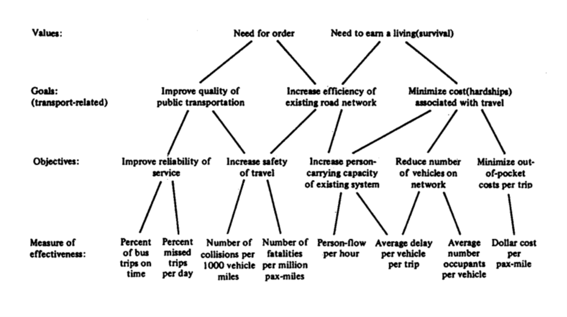

Lecture 3 - Transportation Planning Process
CIVE 461/861: Urban Transportation Planning - Fall 2023
Outline
- Decision-making models
- Planning and decision process
- Measures of effectiveness
10,000 Foot View on Decision-Making Process
| Substantive Rationality | Issue | Indirect Approach |
|---|---|---|
| Interactions with others are limited and their response depend on our actions alone | Interactions | The outcome of interactions with others depend on context and their interpretation of our intentions |
| The relationships between objectives, states, goals and actions are understandable | Complexity | Our understanding of the relationships between objectives, states, goals and actions is imperfect but can be improved by experience |
| The problem and context can be described by a well specified and estimated analytical model | Abstraction | Appropriate simplification of complex problems must rely on judgement and understanding of context |
| What happens is what we intended to happen | Intentionality | What happens is the result of complex processes whose totality nobody fully understands |
| Decisions are made on the basis of the fullest possible information | Information | Decisions are recommended and made acknowledging that only limited knowledge is or can be available |
| The best outcome is achieved through a conscious process of maximization | Adaptation | Good results are obtained through continual adaptation to constantly changing conditions |
| Rules and guidelines can be defined that allow people to find the correct solutions | Expertise | Experts can do things that others cannot – and can only learn with difficulty |
Institutional Framework & Transportation Planning
- Multiple actors/organizations = complicated decision-making
- Effects of institutional frameworks:
- Organizational structure influences planning & decision-making process
- Effective for long-established strategies
- Challenging for new proposals / innovations
Institutional Framework & Transportation Planning
Strategies (for Planers) to Overcome Institutional Barriers
- Inclusive set of partners
- Expand opportunity for public involvement
- Clear identification of project financing
- Advocate strengths of quantitative analysis: evidenced-based planning
- Increase focus on system performance optimization
- Formal power-sharing among transportation agencies
Decision-Making Models
Theoretical Models
- Rational actor
- Satisficing
- Incremental
- Organizational process
- Political bargaining
Rational Actor Model
- Rational, objective decision-making intended to maximize explicit set of goals & objectives
- Completely informed decisions
- Reflected in planning process that evolved in 1950s/60s
- Still used for most major transportation analysis efforts

Problems with Rational Actor Model
Normative model of what decision-making should be rather than how it actually is done
- Whose goals/objectives?
- Who defines problems?
- Can all relevant alternatives be examined?
- Can all relevant information by obtained and used?
- How to handle uncertainty?
- Ignores political pressures & non-technical actors
- Emphasizes the “one best way” to solve problems
Satisficing Model
- Retains rational actors but loosens assumption that solution space can by exhaustively explored and optimal solution found
- Iterative search for sufficiently good solution

Incremental Decision-Making Model
- Also known as Science of Muddling Through
- Premise it that people:
- Never can agree on explicit goals & objectives
- Cannot deal with large alternative set
- Are problem-simplifiers
- Focus on policies tat differ incrementally from existing ones
- Continually redefine problems & solutions
Incremental Decision-Making Model
- Shifts emphasis from determining goals & objectives to dealing directly with issues & solutions
- Dynamic & on-going process
- Extension of satisficing approach – recognizes limitations in information & assessment capacity
- Addresses alternative generation issue – where do alternatives originate?
- Typically, recycling old ideas
Incremental Decision-Making Model

Problems:
- Reactive -> miss opportunities
- Myopic
- May increment to death
- Non-incremental decisions become hard to make
Organizational Process Model
- Most decisions made within organizations (DOT, city, etc.)
- Decisions are influenced by:
- Formal & informal organizational structures
- Channels of communication
- Standard operating procedure
- Organization’s mandate
- Politics of bureaucracy
- Divisions & limitations of power
- Communications & coordination “overhead”
- Protection of “turf”
Political Bargaining Model
- We live in a pluralistic society
- Diverse goals
- Conflicts among competing groups
- Bargaining required to achieve compromise
- Decision-making inherently political
- Outcomes seldom optimal
- Solutions acceptable
- Controversial aspects often ignored or deferred
- Process tied to election cycles, political agendas, opinion polls, etc.
Planning and Decision process
Decision-Making Elements
- Pluralistic – conflicting values & fragmented decision-making
- Resource-allocative – limited resources lead to necessary tradeoffs
- Consensus-seeking – education, citizen involvement, mobilizing business leadership
- Problem simplifying – urban systems are complex
- Uncertainty-avoiding – dramatic changes in policy, untried solutions, & long-term solutions are rare
Role of Planning
- Planning informs decision-making process
- Provide information needed/wanted by decision-makers:
- Available alternatives
- Tradeoffs
- Consequences
- Provided information must be:
- Credible
- Understandable
- Timely
Decision-Making Stages
Planning relates to four major stages of decision-making:
- Problem identification & definition
- Debate & choice
- Implementation
- Evaluation & feedback
Planning & Decision-Making

Transportation Planning Process
Adaptive or mixed-mode decision-making styles seem more flexible and appropriate to the characteristics of transport problems

Monitoring
- Monitoring approach enables a continuous planning process
- Contrast with conventional approach of spending considerable resources over a period of one or two years to undertake a large-scale transport study
- Burst of activity may be followed by a much longer period of limited effort in planning and updating plans
- Reports and master plans become obsolete or simply forgotten, and nobody capable of running the models again is left in the planning unit
- New data sources allow us to better monitor and respond to system state
Transportation Planning Paradigms
Conventional
- Foster convergence in solutions
- Focus on short-term impacts
- Pay attention to physical–material capital.
- Competition, consumerism, and individualism
- Faith that technology will provide solutions
- Analyses based on reductionism and assumptions of linearity
Transportation Planning Paradigms
Emerging
- Diverse & creative solutions
- Focus on long-term payoffs
- Social capital more important than physical capital
- Emphasis on cooperation, quality of life, and community
- Ecology over technology
- Analyses based on emergence and complexity
Evaluation: Values/Visions, Goals, & Objectives
- Before we can meaningfully evaluate alternative policies, we must define our values and why we have them
- Values/Visions: Basic social drivers that govern human behavior
- Goals: Generalized statements that broadly relate physical environment to values – no clear quantification
- Objectives: Specific & measurable statements related to attainment of goals
- Measures of Effectiveness: Measure of degree of attainment of particular objectives
Evaluation: Values/Visions, Goals, & Objectives
Transportation Paradigms - Goals
Conventional
- System expansion & safety
- Efficiency improvements
- Traffic management
- Demand management
- Intelligent transportation systems (ITS)
Transportation Paradigms - Goals
Emerging
- System maintenance & safety
- Traffic calming & urban design
- Emphasis on connections & relationships among modes – multimodality & intermodality
- Transportation & land use interaction and integration
- Demand management for reducing motorized transport
- Demand & increase in nonmotorized travel
- Education & public involvement
Transportation Paradigms - Strategies
Conventional
- Subsidies to transportation users
- True total costs to society not reflected in price to travel
- Technology used to promote individual mobility, meet government-mandated performance thresholds, & improve system performance
Transportation Paradigms - Strategies
Emerging
- Pricing includes environmental costs
- Internalizing external costs
- Technology used as a travel substitute
Criteria for Goals & Objectives
- Must be clear, concise, & unambiguous
- Objectives must follow logically from goals
- Must reflect views & aspirations of community
- Each objective must be measurable by at least one MOE
- MOE measurement must require only a reasonable effort
- Goals & objectives should be independent of specific plans & modes
Criteria for MOE
- Relevant to objectives
- Measurable
- Sensitive
- To policy of interest
- Differentiate impacts by interest group
- Unbiased
- Manageable
- Understandable
Accessibility MOE
- Average travel time from origin to destination
- Average trip length
- Accessibility index
- Mode split by region, facility, or route
- Percentage of employment/activity centers within X miles of major highways/transit station
- Number of bridges with vertical clearance less than X feet
- Percent of population within X minutes of Y percent of employment sites
- Percent of region’s mobility impaired population who reach specific activity by public transit
Mobility MOE
- Origin to destination travel times
- Average speed or travel time
- Vehicle-miles traveled by congestion level
- Lost time or delay due to congestion
- Level-of-service/volume-delay ratio
- Vehicle-hrs traveled per capita
- Vehicle-mi traveled per capita
- Percent transit on-time performance
- Transit service frequency
- Modal split
- Transfer time between modes
- User’s travel time perception
- Delay per goods ton-mi
- Percent of transit or non-motorized trips by trip purpose
Economic Development MOE
- Economic cost of road collisions
- Economic cost of lost time in travel
- Percent of wholesale/retail/commercial centers with unrestricted vehicle weight roads
- Jobs directly created/supported
- Percent of region’s unemployed or low-income people who consider transportation a principle barrier to employment
Quality of Life MOE
- Lost time for congestion
- Crashes per vehicle-mi or person-mi
- Tons of generated pollution
- User safety and urban quality perception
- Average hours spent traveling per day
- Percent of population exposed to noise
Environmental & Resource Consumption MOE
- Overall mode split by facility or route
- Tons of pollution
- Number of days in air quality non-compliance
- Level of sprawl: difference between changes in urban and sub-urban housing density
- Number of collisions involving hazardous materials
Safety MOE
- Number of collisions per vehicle-mi per year/trip/ton-mi/capita
- Number of high collision locations
- Response time to collision incidents
- Accident risk index
- Construction-related fatalities/injuries
- Collisions at major inter-modal (e.g., railroad) crossings
- Pedestrian/bicycle collisions
Operating Efficiency MOE
- Transportation system service costs
- Cost/benefit measures
- Average cost per lane-mi construction
- Origin to destination travel time
- Average speed
- Percent of projects rated as good to excellent quality
- Volume/capacity ratio
- Cost per goods ton-mi
- Mode split
- Customer/user satisfaction
Some Transportation Policy Building Blocks